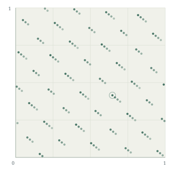

Diophantine approximation
Metric theory, Khintchine-type theorems, and approximation exponents.
Number theory & dynamics
PhD candidate in Mathematics
I study Diophantine approximation, with a focus on group actions, orbit distribution, and the geometry of numbers.
At LAMA, Université Paris-Est Créteil,
under the supervision of Faustin Adiceam.

01 / Research
How closely can an orbit approach a given point?
My research explores this question in Euclidean spaces and on tori. I am interested in almost-sure approximation laws, the distribution of orbits, and the measure and dimension of exceptional sets.
Metric theory, Khintchine-type theorems, and approximation exponents.
Integer matrix actions, orbit distribution, and shrinking targets.
Lattice point counting and its applications to metric approximation.
02 / Papers
Current research writing.
Asymptotic and uniform approximation by special linear group orbits on tori.
For the action of SLn(ℤ) on the n-dimensional torus, this manuscript determines the generic Diophantine exponents of approximation. For almost every pair of points, both the asymptotic and uniform approximation exponents are equal to n − 1. This gives the exact almost-sure rate at which an orbit approaches a target as the size of the acting matrix grows.
03 / Talks
LAMA Doctoral Seminar Université Gustave Eiffel
LAMA Doctoral Seminar Université Paris-Est Créteil
04 / Teaching
Université Paris-Est Créteil
Undergraduate mathematics
2026–2027I teach tutorials for second-year science students, including physics, chemistry, and biology programmes.
Course materials and exercise solutions are shared with enrolled students on EPREL.
05 / Curriculum vitae
06 / Contact
Office & postal address
LAMA · Office P3 427